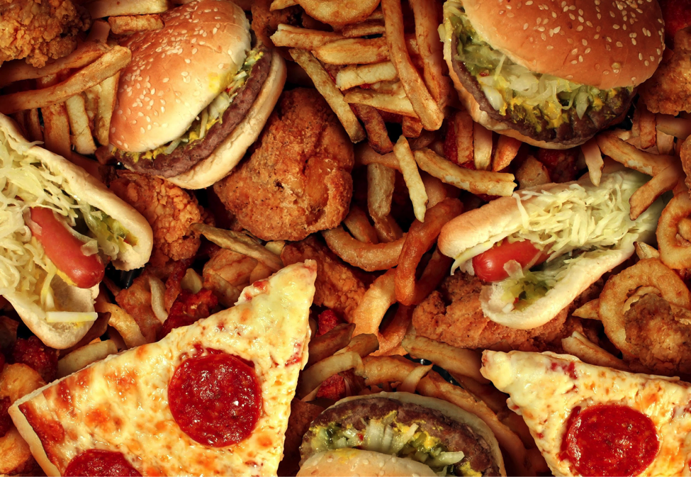
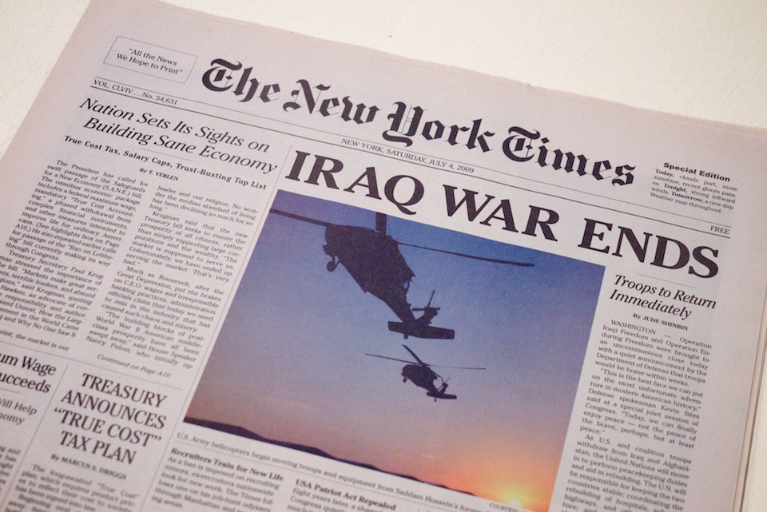

COVID-19's Takeover
One thing that COVID-19 did to us was keep us in. Through stay-at-home orders, we were kept inside, by the fridge but not by the sidewalks. As a result, I gained some weight (I'm sadly not the only one that admits this) when access to the gym was closed and the outsides were not even readily available for usage. On top of this, during the George Floyd riots, a curfew was established, which further limited our ability to leave home and get much needed exercise. Even today, with curfews lifted and lockdowns slightly easened, we are facing a new challenge that prevents us from getting outside - the cold, which, as an addon, made me eat more food.


Another thing that COVID-19 changed my view on is Donald Trump. Even before the pandemic, I wasn't a fan of Donald Trump, who was known for his extremely inappropiate remarks before and during his term as president. During the pandemic, his lackluster response and his refusal to wear a mask helped solidify my opposition of him, and towards the end of his presidency, his role in sparking the Capitol Riots helped convince me of his almost-psychotic decisions and mindset. Even though Joe Biden isn't the best person to take office, anyone is better than Donald Dump in my opinion.
In addition, I have learned to read and appreciate quality, non-partisan writing from the New York Times. Because of my discovery that Stuyvesant offers the New York Times, which beforehand, I had read about it in books, I started reading their articles out of boredom and the abundance of time. After reading a few of their articles, I realized why they recieved such acclaim.
